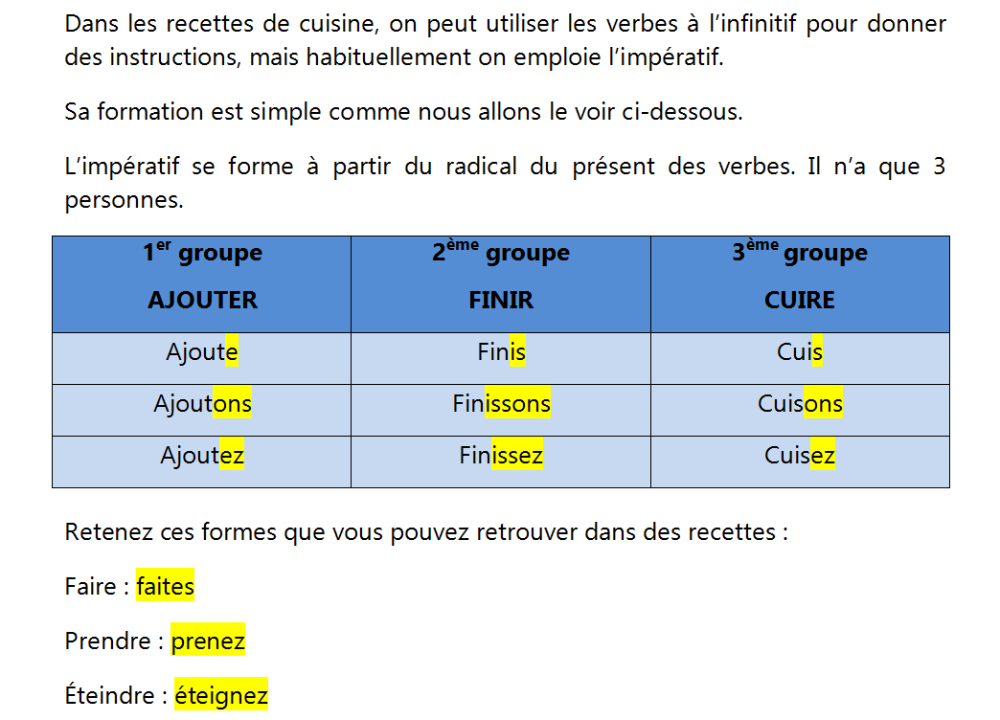

Gastronomie
Grammaire Impératif
L'impératif

Retrouvez la recette de ce dessert breton en utilisant les verbes indiqués à l’impératif :
Pour en savoir plus!
Pour réviser: https://www.lepointdufle.net/p/imperatif.htm#recettes

Retrouvez la recette de ce dessert breton en utilisant les verbes indiqués à l’impératif :
Pour réviser: https://www.lepointdufle.net/p/imperatif.htm#recettes